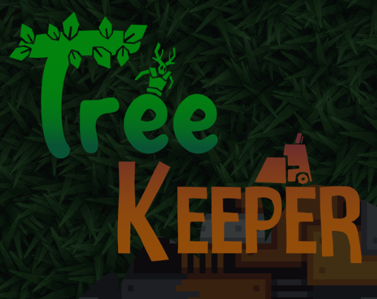

TreeKeeper

Team Size: 7 | Role: Designer and Programmer
Responsibilities:
- Tower Defense System Designer
- Tower Designer and Programmer
- Enemy Designer and Programmer
- Wave Designer
Treekeeper is a 3d, top-down, open field tower defense game where the player plays as a druid defending The Great Tree from the fires of industry. Strategically place natural defenses around the tree to protect it from a fully autonomous corporation that has other plans for the land The Great Tree is on. Move around the map, build up defenses, advance them along upgrade trees and combat the corporation’s legions of AI controlled robots.
Link to Game